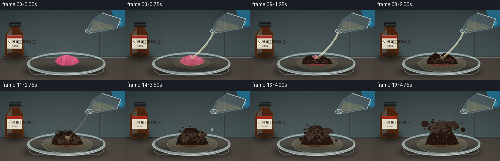
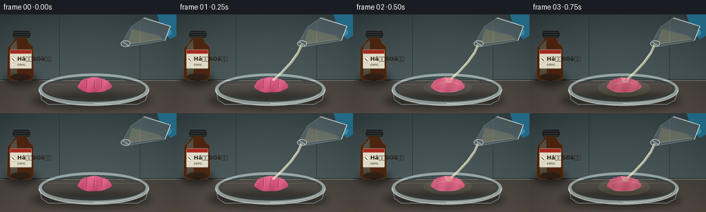

CODING AGENTS AS PIXEL WORLD MODELS
traex/GPT-5.6-Sol · material_0043
点击播放 · 原生 RGB 像素
逐轮保存的候选
回放视频、检查图与代码变化。
每份候选均可单独播放。实际图片检查记录在下方工具轨迹中。
候选 01播放与检查图
点击播放 · 原生 RGB 像素

展开代码变化
--- 上一保存版本
+++ 本次保存版本
@@ -0,0 +1,273 @@
+from pathlib import Path
+import math, json
+import numpy as np
+from PIL import Image, ImageDraw, ImageFont, ImageFilter
+import artifact_io
+
+# Deterministic hand-built scientific timelapse, rendered oversize for clean antialiasing.
+ROOT = Path(__file__).resolve().parent
+W,H,N,S = 256,144,20,4
+RW,RH = W*S,H*S
+rng = np.random.default_rng(43017)
+try:
+ FONT = ImageFont.truetype('/usr/share/fonts/truetype/dejavu/DejaVuSans.ttf', 7*S)
+ FONT_B = ImageFont.truetype('/usr/share/fonts/truetype/dejavu/DejaVuSans-Bold.ttf', 8*S)
+ FONT_SM = ImageFont.truetype('/usr/share/fonts/truetype/dejavu/DejaVuSans.ttf', 5*S)
+except Exception:
+ FONT=FONT_B=FONT_SM=ImageFont.load_default()
+
+def sc(v): return int(round(v*S))
+def box(b): return tuple(sc(v) for v in b)
+def pts(p): return [(sc(x),sc(y)) for x,y in p]
+def rgba_layer(): return Image.new('RGBA',(RW,RH),(0,0,0,0))
+def ellipse(draw, b, **kw):
+ if 'width' in kw: kw['width']=max(1,sc(kw['width']))
+ draw.ellipse(box(b), **kw)
+def polygon(draw, p, **kw):
+ if 'width' in kw: kw['width']=max(1,sc(kw['width']))
+ draw.polygon(pts(p), **kw)
+def line(draw, p, **kw):
+ if 'width' in kw: kw['width']=sc(kw['width'])
+ draw.line(pts(p), **kw)
+
+def alpha_comp(base, layer): return Image.alpha_composite(base.convert('RGBA'),layer)
+
+# coherent reaction seeds
+bubble_seeds=[]
+for i in range(45):
+ birth = rng.integers(4,18)
+ x = rng.normal(0,16)
+ rad = rng.uniform(1.4,5.8)
+ phase = rng.uniform(0,6.28)
+ bubble_seeds.append((birth,x,rad,phase,rng.uniform(.65,1.15)))
+pore_seeds=[]
+for i in range(38):
+ pore_seeds.append((rng.uniform(-25,25),rng.uniform(0,1),rng.uniform(.7,2.5),rng.integers(7,19)))
+
+# static film grain
+noise = rng.normal(0,1,(RH,RW))
+
+def base_scene(t):
+ y=np.arange(RH)[:,None]/S
+ x=np.arange(RW)[None,:]/S
+ arr=np.zeros((RH,RW,3),dtype=np.float32)
+ # cool lab wall with a restrained vignette
+ wall = np.clip(y/104,0,1)
+ arr[:,:,0]=58+20*wall
+ arr[:,:,1]=69+22*wall
+ arr[:,:,2]=72+20*wall
+ # bench
+ bench=y>=95
+ arr[:,:,0]=np.where(bench,76+16*(y-95)/49,arr[:,:,0])
+ arr[:,:,1]=np.where(bench,71+13*(y-95)/49,arr[:,:,1])
+ arr[:,:,2]=np.where(bench,66+10*(y-95)/49,arr[:,:,2])
+ vig=((x-128)/155)**2+((y-70)/110)**2
+ arr -= 15*np.clip(vig,0,1)[:,:,None]
+ arr += noise[:,:,None]*1.4
+ arr=np.clip(arr,0,255).astype(np.uint8)
+ im=Image.fromarray(arr,'RGB').convert('RGBA')
+ d=ImageDraw.Draw(im,'RGBA')
+ # tile seams and horizon
+ d.line([(0,sc(95)),(RW,sc(95))],fill=(31,37,38,210),width=sc(1))
+ d.line([(0,sc(96)),(RW,sc(96))],fill=(122,125,119,45),width=sc(1))
+ d.line([(sc(86),0),(sc(86),sc(94))],fill=(32,39,41,80),width=sc(.6))
+ d.line([(sc(203),0),(sc(203),sc(94))],fill=(32,39,41,70),width=sc(.6))
+ # soft cast shadows
+ sh=rgba_layer(); sd=ImageDraw.Draw(sh,'RGBA')
+ ellipse(sd,(45,112,220,139),fill=(5,5,4,115)); ellipse(sd,(7,84,55,105),fill=(4,4,3,120))
+ sh=sh.filter(ImageFilter.GaussianBlur(sc(5)))
+ return alpha_comp(im,sh)
+
+def draw_bottle(im):
+ # amber sulfuric acid reagent bottle in rear left, deliberately legible visual context
+ lay=rgba_layer(); d=ImageDraw.Draw(lay,'RGBA')
+ # cap
+ polygon(d,[(20,24),(42,24),(44,30),(42,34),(20,34),(18,30)],fill=(27,29,28,255))
+ for yy in (26,29,32): line(d,[(20,yy),(42,yy)],fill=(93,99,96,150),width=.5)
+ # shoulders and bottle body
+ polygon(d,[(22,34),(39,34),(42,42),(48,47),(49,91),(45,96),(14,96),(10,91),(11,48),(17,42)],fill=(76,35,13,245),outline=(190,124,54,160))
+ polygon(d,[(15,47),(21,40),(24,37),(25,91),(15,91)],fill=(203,118,38,42))
+ ellipse(d,(15,86,45,96),fill=(47,22,9,175))
+ # white hazard label
+ d.rounded_rectangle(box((14,51,46,79)),radius=sc(1.5),fill=(229,224,203,245),outline=(110,100,79,255),width=sc(.6))
+ d.rectangle(box((14.8,51.8,45.2,57)),fill=(171,40,29,240))
+ # hazard diamond
+ polygon(d,[(19,61),(24,66),(19,71),(14,66)],fill=(241,239,220,255),outline=(180,30,22,255))
+ line(d,[(17.2,64.2),(20.8,67.8)],fill=(35,30,25,255),width=.7)
+ d.text((sc(25),sc(60)),"HâSOâ",font=FONT_B,fill=(38,31,24,255),stroke_width=0)
+ d.text((sc(25),sc(70)),"conc.",font=FONT_SM,fill=(49,43,34,255))
+ return alpha_comp(im,lay)
+
+def draw_dish_back(im):
+ lay=rgba_layer(); d=ImageDraw.Draw(lay,'RGBA')
+ # rear rim, transparent glass and acid reflection
+ ellipse(d,(56,86,216,132),fill=(159,181,179,18),outline=(201,221,219,150),width=sc(1.2))
+ ellipse(d,(61,90,211,126),fill=(104,119,113,17),outline=(53,69,68,130),width=sc(.75))
+ line(d,[(68,102),(204,102)],fill=(230,242,236,32),width=.7)
+ return alpha_comp(im,lay)
+
+def gum_mask(t):
+ # gum begins as a recognizable pink pillow and gradually slumps under acid
+ q=max(0,min(1,(t-2)/10))
+ cx=137; cy=103+2*q
+ w=48+11*q; h=22-2*q
+ p=[]
+ for k in range(48):
+ a=2*math.pi*k/48
+ wob=(1+0.045*math.sin(3*a+0.5)+0.025*math.sin(7*a))
+ p.append((cx+math.cos(a)*w/2*wob,cy+math.sin(a)*h/2*wob))
+ m=Image.new('L',(RW,RH),0); md=ImageDraw.Draw(m)
+ polygon(md,p,fill=255)
+ return m
+
+def draw_reaction(im,t):
+ q=max(0,min(1,(t-2)/10))
+ m=gum_mask(t)
+ # gum shading is generated spatially then clipped
+ yy,xx=np.mgrid[0:RH,0:RW]
+ xl=xx/S; yl=yy/S
+ pink=np.array([212,88,126.],float); char=np.array([48,25,17.],float)
+ col=pink*(1-q)+char*q
+ shade=18*(102-yl)/14 + 7*np.sin(xl*.31+yl*.11)
+ gum=np.zeros((RH,RW,4),dtype=np.uint8)
+ for c in range(3): gum[:,:,c]=np.clip(col[c]+shade,0,255)
+ gum[:,:,3]=np.asarray(m)
+ im=alpha_comp(im,Image.fromarray(gum,'RGBA'))
+ details=rgba_layer(); d=ImageDraw.Draw(details,'RGBA')
+ # initial molded chewing-gum ridges, fading as it chars
+ if t<9:
+ fade=int(180*(1-t/10))
+ for dx in (-11,0,11):
+ line(d,[(137+dx,95+q*3),(137+dx-1,108+q*2)],fill=(117,42,70,fade),width=.8)
+ line(d,[(138+dx,95+q*3),(138+dx,106+q*2)],fill=(246,162,183,fade//2),width=.55)
+ # acid slick expands around gum; sulfuric acid is colorless but highly refractive
+ if t>=2:
+ r=min(1,(t-1)/8)
+ ellipse(d,(104-17*r,96-4*r,170+19*r,117+11*r),fill=(188,181,128,int(24+20*r)),outline=(239,230,183,int(110*r)),width=.7)
+ ellipse(d,(117,99,160,113),outline=(255,245,203,90),width=.6)
+ # irregular scorched edge
+ if t>=4:
+ for k in range(18):
+ a=2*math.pi*k/18
+ rr=24+4*math.sin(k*2.7)
+ x=137+rr*math.cos(a); y=104+(9+2*q)*math.sin(a)
+ ellipse(d,(x-1.5,y-1,x+1.5,y+1),fill=(70,34,19,int(75+130*q)))
+ im=alpha_comp(im,details)
+ # Rising porous carbon foam - multiple coherent lobes, starts after visible contact.
+ if t>=5:
+ p=(t-5)/14
+ mound=rgba_layer(); md=ImageDraw.Draw(mound,'RGBA')
+ base_y=110
+ # foundation silhouette (broadens and rises through timelapse)
+ top=101-38*p
+ silhouette=[(107-4*p,111),(108,99-4*p),(116,94-12*p),(124,91-23*p),(134,top),
+ (143,92-26*p),(153,95-18*p),(163,99-8*p),(169+4*p,111)]
+ polygon(md,silhouette,fill=(35,22,17,255))
+ # activated carbonaceous bubbles/lobes
+ for birth,xoff,rad,phase,stretch in bubble_seeds:
+ if t<birth: continue
+ age=(t-birth+1)/(20-birth)
+ # late births stay low; old lobes rise with expansion
+ y0=108 - age*(21+22*p)*(0.65+0.35*math.cos(phase)**2)
+ x0=137+xoff*(.75+.4*p)+1.3*math.sin(phase+t*.08)
+ r=rad*(.65+age*.65)
+ cval=int(23+26*((math.sin(phase)*.5+.5)))
+ ellipse(md,(x0-r,y0-r*stretch,x0+r,y0+r*stretch),fill=(cval+13,cval, max(10,cval-8),255),outline=(79,49,28,150),width=.45)
+ # warm caramel fringe at bottom
+ line(md,[(106,110),(120,113),(151,113),(172,110)],fill=(115,58,24,210),width=1.3)
+ im=alpha_comp(im,mound)
+ pores=rgba_layer(); pd=ImageDraw.Draw(pores,'RGBA')
+ height=12+39*p
+ for xo,yf,r,birth in pore_seeds:
+ if t<birth: continue
+ x0=137+xo*(.8+.3*p)
+ y0=108-yf*height
+ # pore: black center and moist copper rim
+ ellipse(pd,(x0-r*1.25,y0-r,x0+r*1.25,y0+r),fill=(8,7,6,210),outline=(105,64,34,120),width=.55)
+ ellipse(pd,(x0-r*.4,y0-r*.55,x0+r*.25,y0-r*.15),fill=(194,126,58,80))
+ # glossy acid glints on fresh foam
+ for j in range(6):
+ x0=119+j*7+2*math.sin(j)
+ y0=101-(j%3)*8*p
+ ellipse(pd,(x0,y0,x0+1.3,y0+2.2),fill=(235,192,105,110))
+ im=alpha_comp(im,pores)
+ return im
+
+def draw_pourer_and_stream(im,t):
+ lay=rgba_layer(); d=ImageDraw.Draw(lay,'RGBA')
+ # blue nitrile-gloved fingers grasping a tipped small glass beaker
+ polygon(d,[(226,-5),(256,-5),(256,31),(247,36),(236,26)],fill=(35,104,132,255))
+ polygon(d,[(230,14),(248,18),(236,34),(224,31)],fill=(45,126,157,255),outline=(97,171,190,150))
+ ellipse(d,(229,20,249,32),fill=(51,137,165,255))
+ # tipped beaker: mouth points toward gum at (178,43)
+ glass=[(210,4),(247,17),(239,38),(185,47),(177,41),(190,18)]
+ polygon(d,glass,fill=(183,215,220,40),outline=(220,240,241,205))
+ line(d,[(208,5),(247,17),(239,38)],fill=(246,254,254,210),width=1)
+ line(d,[(190,19),(230,31),(238,37)],fill=(103,145,151,130),width=.75)
+ # liquid body inside tilted glass
+ polygon(d,[(191,21),(229,31),(235,36),(185,43)],fill=(221,213,164,70))
+ line(d,[(185,43),(235,36)],fill=(252,241,186,120),width=.8)
+ # elliptical pouring lip
+ ellipse(d,(175,38,189,47),fill=(189,217,216,45),outline=(235,249,247,230),width=.85)
+ line(d,[(178,40),(186,45)],fill=(255,255,244,190),width=.8)
+ # stream frames 1..11, then dwindling drops. trajectory curves toward gum center
+ if 1<=t<=11:
+ strength=1 if t<9 else (12-t)/4
+ path=[(181.5,44),(176,56),(166,70),(153,84),(140,96)]
+ line(d,path,fill=(229,225,187,int(165*strength)),width=3.0*strength+0.8)
+ line(d,[(180.5,44),(175,56),(165,70),(152,84),(139,96)],fill=(255,255,237,int(205*strength)),width=.65)
+ # bright impact splash
+ if t>=2:
+ ellipse(d,(134,93,144,99),fill=(232,219,165,80),outline=(255,249,215,130),width=.5)
+ for a in (-2.5,-1,1.2,2.8):
+ ellipse(d,(139+a*2-1,94-abs(a),139+a*2+1,96-abs(a)),fill=(247,234,189,130))
+ elif 12<=t<=14:
+ yy=49+(t-12)*14
+ ellipse(d,(177,yy,180,yy+5),fill=(245,241,210,160),outline=(255,255,240,170))
+ return alpha_comp(im,lay)
+
+def draw_smoke(im,t):
+ if t<8:return im
+ lay=rgba_layer(); d=ImageDraw.Draw(lay,'RGBA')
+ p=(t-8)/11
+ # semi-transparent steam/acid mist, coherent curling wisps
+ for j in range(7):
+ phase=j*1.7
+ x0=116+j*7
+ y0=90-j%2*3
+ path=[]
+ for k in range(18):
+ u=k/17
+ x=x0+5*math.sin(u*5+phase+t*.12)*u
+ y=y0-u*(20+18*p)-p*j*.6
+ path.append((x,y))
+ line(d,path,fill=(214,221,211,int(18+22*p)),width=1.2+1.2*p)
+ lay=lay.filter(ImageFilter.GaussianBlur(sc(1.6)))
+ return alpha_comp(im,lay)
+
+def draw_dish_front(im):
+ lay=rgba_layer(); d=ImageDraw.Draw(lay,'RGBA')
+ # front wall and glints over the specimen establish petri dish depth
+ line(d,[(57,108),(60,124),(70,131),(199,131),(211,125),(216,108)],fill=(185,211,210,105),width=1.2)
+ d.arc(box((56,87,216,133)),0,180,fill=(225,239,237,190),width=sc(1.15))
+ d.arc(box((61,91,211,128)),2,178,fill=(105,135,134,150),width=sc(.7))
+ d.arc(box((65,96,207,130)),10,90,fill=(252,255,252,170),width=sc(.65))
+ return alpha_comp(im,lay)
+
+def make_frame(t):
+ im=base_scene(t)
+ im=draw_bottle(im)
+ im=draw_dish_back(im)
+ im=draw_reaction(im,t)
+ im=draw_smoke(im,t)
+ im=draw_dish_front(im)
+ im=draw_pourer_and_stream(im,t)
+ # subtle chronological exposure flicker typical of compressed timelapse, not camera motion
+ arr=np.asarray(im.convert('RGB').resize((W,H),Image.Resampling.LANCZOS)).astype(np.int16)
+ flicker=1.5*math.sin(t*1.31)
+ arr=np.clip(arr+flicker,0,255).astype(np.uint8)
+ return arr
+
+frames=np.stack([make_frame(i) for i in range(N)],axis=0)
+artifact_io.save(frames,ROOT)
+print(f"saved {frames.shape} RGB timelapse to {ROOT}")
候选 02播放与检查图
点击播放 · 原生 RGB 像素

展开代码变化
--- 上一保存版本
+++ 本次保存版本
@@ -65,7 +65,7 @@
arr -= 15*np.clip(vig,0,1)[:,:,None]
arr += noise[:,:,None]*1.4
arr=np.clip(arr,0,255).astype(np.uint8)
- im=Image.fromarray(arr,'RGB').convert('RGBA')
+ im=Image.fromarray(arr).convert('RGBA')
d=ImageDraw.Draw(im,'RGBA')
# tile seams and horizon
d.line([(0,sc(95)),(RW,sc(95))],fill=(31,37,38,210),width=sc(1))
@@ -132,7 +132,7 @@
gum=np.zeros((RH,RW,4),dtype=np.uint8)
for c in range(3): gum[:,:,c]=np.clip(col[c]+shade,0,255)
gum[:,:,3]=np.asarray(m)
- im=alpha_comp(im,Image.fromarray(gum,'RGBA'))
+ im=alpha_comp(im,Image.fromarray(gum))
details=rgba_layer(); d=ImageDraw.Draw(details,'RGBA')
# initial molded chewing-gum ridges, fading as it chars
if t<9:
可观测工具轨迹
实际执行的命令与返回图片。
命令 1exit 0
/bin/bash -lc "cat prompt.txt && printf '\\n---RULES---\\n' && cat GENERATION_RULES.md && printf '\\n---SPEC---\\n' && cat task_spec.json"
命令 2exit 0
/bin/bash -lc "find . -maxdepth 2 -type f -printf '%p\\n' | sort"
命令 3exit 0
/bin/bash -lc 'cat artifact_io.py'
命令 4exit 1
/bin/bash -lc "cat > generate.py <<'PY'
from pathlib import Path
import math, json
import numpy as np
from PIL import Image, ImageDraw, ImageFont, ImageFilter
import artifact_io
# Deterministic hand-built scientific timelapse, rendered oversize for clean antialiasing.
ROOT = Path(__file__).resolve().parent
W,H,N,S = 256,144,20,4
RW,RH = W*S,H*S
rng = np.random.default_rng(43017)
try:
FONT = ImageFont.truetype('/usr/share/fonts/truetype/dejavu/DejaVuSans.ttf', 7*S)
FONT_B = ImageFont.truetype('/usr/share/fonts/truetype/dejavu/DejaVuSans-Bold.ttf', 8*S)
FONT_SM = ImageFont.truetype('/usr/share/fonts/truetype/dejavu/DejaVuSans.ttf', 5*S)
except Exception:
FONT=FONT_B=FONT_SM=ImageFont.load_default()
def sc(v): return int(round(v*S))
def box(b): return tuple(sc(v) for v in b)
def pts(p): return [(sc(x),sc(y)) for x,y in p]
def rgba_layer(): return Image.new('RGBA',(RW,RH),(0,0,0,0))
def ellipse(draw, b, **kw): draw.ellipse(box(b), **kw)
def polygon(draw, p, **kw): draw.polygon(pts(p), **kw)
def line(draw, p, **kw):
if 'width' in kw: kw['width']=sc(kw['width'])
draw.line(pts(p), **kw)
def alpha_comp(base, layer): return Image.alpha_composite(base.convert('RGBA'),layer)
# coherent reaction seeds
bubble_seeds=[]
for i in range(45):
birth = rng.integers(4,18)
x = rng.normal(0,16)
rad = rng.uniform(1.4,5.8)
phase = rng.uniform(0,6.28)
bubble_seeds.append((birth,x,rad,phase,rng.uniform(.65,1.15)))
pore_seeds=[]
for i in range(38):
pore_seeds.append((rng.uniform(-25,25),rng.uniform(0,1),rng.uniform(.7,2.5),rng.integers(7,19)))
# static film grain
noise = rng.normal(0,1,(RH,RW))
def base_scene(t):
y=np.arange(RH)[:,None]/S
x=np.arange(RW)[None,:]/S
arr=np.zeros((RH,RW,3),dtype=np.float32)
# cool lab wall with a restrained vignette
wall = np.clip(y/104,0,1)
arr[:,:,0]=58+20*wall
arr[:,:,1]=69+22*wall
arr[:,:,2]=72+20*wall
# bench
bench=y>=95
arr[:,:,0]=np.where(bench,76+16*(y-95)/49,arr[:,:,0])
arr[:,:,1]=np.where(bench,71+13*(y-95)/49,arr[:,:,1])
arr[:,:,2]=np.where(bench,66+10*(y-95)/49,arr[:,:,2])
vig=((x-128)/155)**2+((y-70)/110)**2
arr -= 15*np.clip(vig,0,1)[:,:,None]
arr += noise[:,:,None]*1.4
arr=np.clip(arr,0,255).astype(np.uint8)
im=Image.fromarray(arr,'RGB').convert('RGBA')
d=ImageDraw.Draw(im,'RGBA')
# tile seams and horizon
d.line([(0,sc(95)),(RW,sc(95))],fill=(31,37,38,210),width=sc(1))
d.line([(0,sc(96)),(RW,sc(96))],fill=(122,125,119,45),width=sc(1))
d.line([(sc(86),0),(sc(86),sc(94))],fill=(32,39,41,80),width=sc(.6))
d.line([(sc(203),0),(sc(203),sc(94))],fill=(32,39,41,70),width=sc(.6))
# soft cast shadows
sh=rgba_layer(); sd=ImageDraw.Draw(sh,'RGBA')
ellipse(sd,(45,112,220,139),fill=(5,5,4,115)); ellipse(sd,(7,84,55,105),fill=(4,4,3,120))
sh=sh.filter(ImageFilter.GaussianBlur(sc(5)))
return alpha_comp(im,sh)
def draw_bottle(im):
# amber sulfuric acid reagent bottle in rear left, deliberately legible visual context
lay=rgba_layer(); d=ImageDraw.Draw(lay,'RGBA')
# cap
polygon(d,[(20,24),(42,24),(44,30),(42,34),(20,34),(18,30)],fill=(27,29,28,255))
for yy in (26,29,32): line(d,[(20,yy),(42,yy)],fill=(93,99,96,150),width=.5)
# shoulders and bottle body
polygon(d,[(22,34),(39,34),(42,42),(48,47),(49,91),(45,96),(14,96),(10,91),(11,48),(17,42)],fill=(76,35,13,245),outline=(190,124,54,160))
polygon(d,[(15,47),(21,40),(24,37),(25,91),(15,91)],fill=(203,118,38,42))
ellipse(d,(15,86,45,96),fill=(47,22,9,175))
# white hazard label
d.rounded_rectangle(box((14,51,46,79)),radius=sc(1.5),fill=(229,224,203,245),outline=(110,100,79,255),width=sc(.6))
d.rectangle(box((14.8,51.8,45.2,57)),fill=(171,40,29,240))
# hazard diamond
polygon(d,[(19,61),(24,66),(19,71),(14,66)],fill=(241,239,220,255),outline=(180,30,22,255))
line(d,[(17.2,64.2),(20.8,67.8)],fill=(35,30,25,255),width=.7)
d.text((sc(25),sc(60)),\"HâSOâ\",font=FONT_B,fill=(38,31,24,255),stroke_width=0)
d.text((sc(25),sc(70)),\"conc.\",font=FONT_SM,fill=(49,43,34,255))
return alpha_comp(im,lay)
def draw_dish_back(im):
lay=rgba_layer(); d=ImageDraw.Draw(lay,'RGBA')
# rear rim, transparent glass and acid reflection
ellipse(d,(56,86,216,132),fill=(159,181,179,18),outline=(201,221,219,150),width=sc(1.2))
ellipse(d,(61,90,211,126),fill=(104,119,113,17),outline=(53,69,68,130),width=sc(.75))
line(d,[(68,102),(204,102)],fill=(230,242,236,32),width=.7)
return alpha_comp(im,lay)
def gum_mask(t):
# gum begins as a recognizable pink pillow and gradually slumps under acid
q=max(0,min(1,(t-2)/10))
cx=137; cy=103+2*q
w=48+11*q; h=22-2*q
p=[]
for k in range(48):
a=2*math.pi*k/48
wob=(1+0.045*math.sin(3*a+0.5)+0.025*math.sin(7*a))
p.append((cx+math.cos(a)*w/2*wob,cy+math.sin(a)*h/2*wob))
m=Image.new('L',(RW,RH),0); md=ImageDraw.Draw(m)
polygon(md,p,fill=255)
return m
def draw_reaction(im,t):
q=max(0,min(1,(t-2)/10))
m=gum_mask(t)
# gum shading is generated spatially then clipped
yy,xx=np.mgrid[0:RH,0:RW]
xl=xx/S; yl=yy/S
pink=np.array([212,88,126.],float); char=np.array([48,25,17.],float)
col=pink*(1-q)+char*q
shade=18*(102-yl)/14 + 7*np.sin(xl*.31+yl*.11)
gum=np.zeros((RH,RW,4),dtype=np.uint8)
for c in range(3): gum[:,:,c]=np.clip(col[c]+shade,0,255)
gum[:,:,3]=np.asarray(m)
im=alpha_comp(im,Image.fromarray(gum,'RGBA'))
details=rgba_layer(); d=ImageDraw.Draw(details,'RGBA')
# initial molded chewing-gum ridges, fading as it chars
if t<9:
fade=int(180*(1-t/10))
for dx in (-11,0,11):
line(d,[(137+dx,95+q*3),(137+dx-1,108+q*2)],fill=(117,42,70,fade),width=.8)
line(d,[(138+dx,95+q*3),(138+dx,106+q*2)],fill=(246,162,183,fade//2),width=.55)
# acid slick expands around gum; sulfuric acid is colorless but highly refractive
if t>=2:
r=min(1,(t-1)/8)
ellipse(d,(104-17*r,96-4*r,170+19*r,117+11*r),fill=(188,181,128,int(24+20*r)),outline=(239,230,183,int(110*r)),width=.7)
ellipse(d,(117,99,160,113),outline=(255,245,203,90),width=.6)
# irregular scorched edge
if t>=4:
for k in range(18):
a=2*math.pi*k/18
rr=24+4*math.sin(k*2.7)
x=137+rr*math.cos(a); y=104+(9+2*q)*math.sin(a)
ellipse(d,(x-1.5,y-1,x+1.5,y+1),fill=(70,34,19,int(75+130*q)))
im=alpha_comp(im,details)
# Rising porous carbon foam - multiple coherent lobes, starts after visible contact.
if t>=5:
p=(t-5)/14
mound=rgba_layer(); md=ImageDraw.Draw(mound,'RGBA')
base_y=110
# foundation silhouette (broadens and rises through timelapse)
top=101-38*p
silhouette=[(107-4*p,111),(108,99-4*p),(116,94-12*p),(124,91-23*p),(134,top),
(143,92-26*p),(153,95-18*p),(163,99-8*p),(169+4*p,111)]
polygon(md,silhouette,fill=(35,22,17,255))
# activated carbonaceous bubbles/lobes
for birth,xoff,rad,phase,stretch in bubble_seeds:
if t<birth: continue
age=(t-birth+1)/(20-birth)
# late births stay low; old lobes rise with expansion
y0=108 - age*(21+22*p)*(0.65+0.35*math.cos(phase)**2)
x0=137+xoff*(.75+.4*p)+1.3*math.sin(phase+t*.08)
r=rad*(.65+age*.65)
cval=int(23+26*((math.sin(phase)*.5+.5)))
ellipse(md,(x0-r,y0-r*stretch,x0+r,y0+r*stretch),fill=(cval+13,cval, max(10,cval-8),255),outline=(79,49,28,150),width=.45)
# warm caramel fringe at bottom
line(md,[(106,110),(120,113),(151,113),(172,110)],fill=(115,58,24,210),width=1.3)
im=alpha_comp(im,mound)
pores=rgba_layer(); pd=ImageDraw.Draw(pores,'RGBA')
height=12+39*p
for xo,yf,r,birth in pore_seeds:
if t<birth: continue
x0=137+xo*(.8+.3*p)
y0=108-yf*height
# pore: black center and moist copper rim
ellipse(pd,(x0-r*1.25,y0-r,x0+r*1.25,y0+r),fill=(8,7,6,210),outline=(105,64,34,120),width=.55)
ellipse(pd,(x0-r*.4,y0-r*.55,x0+r*.25,y0-r*.15),fill=(194,126,58,80))
# glossy acid glints on fresh foam
for j in range(6):
x0=119+j*7+2*math.sin(j)
y0=101-(j%3)*8*p
ellipse(pd,(x0,y0,x0+1.3,y0+2.2),fill=(235,192,105,110))
im=alpha_comp(im,pores)
return im
def draw_pourer_and_stream(im,t):
lay=rgba_layer(); d=ImageDraw.Draw(lay,'RGBA')
# blue nitrile-gloved fingers grasping a tipped small glass beaker
polygon(d,[(226,-5),(256,-5),(256,31),(247,36),(236,26)],fill=(35,104,132,255))
polygon(d,[(230,14),(248,18),(236,34),(224,31)],fill=(45,126,157,255),outline=(97,171,190,150))
ellipse(d,(229,20,249,32),fill=(51,137,165,255))
# tipped beaker: mouth points toward gum at (178,43)
glass=[(210,4),(247,17),(239,38),(185,47),(177,41),(190,18)]
polygon(d,glass,fill=(183,215,220,40),outline=(220,240,241,205))
line(d,[(208,5),(247,17),(239,38)],fill=(246,254,254,210),width=1)
line(d,[(190,19),(230,31),(238,37)],fill=(103,145,151,130),width=.75)
# liquid body inside tilted glass
polygon(d,[(191,21),(229,31),(235,36),(185,43)],fill=(221,213,164,70))
line(d,[(185,43),(235,36)],fill=(252,241,186,120),width=.8)
# elliptical pouring lip
ellipse(d,(175,38,189,47),fill=(189,217,216,45),outline=(235,249,247,230),width=.85)
line(d,[(178,40),(186,45)],fill=(255,255,244,190),width=.8)
# stream frames 1..11, then dwindling drops. trajectory curves toward gum center
if 1<=t<=11:
strength=1 if t<9 else (12-t)/4
path=[(181.5,44),(176,56),(166,70),(153,84),(140,96)]
line(d,path,fill=(229,225,187,int(165*strength)),width=3.0*strength+0.8)
line(d,[(180.5,44),(175,56),(165,70),(152,84),(139,96)],fill=(255,255,237,int(205*strength)),width=.65)
# bright impact splash
if t>=2:
ellipse(d,(134,93,144,99),fill=(232,219,165,80),outline=(255,249,215,130),width=.5)
for a in (-2.5,-1,1.2,2.8):
ellipse(d,(139+a*2-1,94-abs(a),139+a*2+1,96-abs(a)),fill=(247,234,189,130))
elif 12<=t<=14:
yy=49+(t-12)*14
ellipse(d,(177,yy,180,yy+5),fill=(245,241,210,160),outline=(255,255,240,170))
return alpha_comp(im,lay)
def draw_smoke(im,t):
if t<8:return im
lay=rgba_layer(); d=ImageDraw.Draw(lay,'RGBA')
p=(t-8)/11
# semi-transparent steam/acid mist, coherent curling wisps
for j in range(7):
phase=j*1.7
x0=116+j*7
y0=90-j%2*3
path=[]
for k in range(18):
u=k/17
x=x0+5*math.sin(u*5+phase+t*.12)*u
y=y0-u*(20+18*p)-p*j*.6
path.append((x,y))
line(d,path,fill=(214,221,211,int(18+22*p)),width=1.2+1.2*p)
lay=lay.filter(ImageFilter.GaussianBlur(sc(1.6)))
return alpha_comp(im,lay)
def draw_dish_front(im):
lay=rgba_layer(); d=ImageDraw.Draw(lay,'RGBA')
# front wall and glints over the specimen establish petri dish depth
line(d,[(57,108),(60,124),(70,131),(199,131),(211,125),(216,108)],fill=(185,211,210,105),width=1.2)
d.arc(box((56,87,216,133)),0,180,fill=(225,239,237,190),width=sc(1.15))
d.arc(box((61,91,211,128)),2,178,fill=(105,135,134,150),width=sc(.7))
d.arc(box((65,96,207,130)),10,90,fill=(252,255,252,170),width=sc(.65))
return alpha_comp(im,lay)
def make_frame(t):
im=base_scene(t)
im=draw_bottle(im)
im=draw_dish_back(im)
im=draw_reaction(im,t)
im=draw_smoke(im,t)
im=draw_dish_front(im)
im=draw_pourer_and_stream(im,t)
# subtle chronological exposure flicker typical of compressed timelapse, not camera motion
arr=np.asarray(im.convert('RGB').resize((W,H),Image.Resampling.LANCZOS)).astype(np.int16)
flicker=1.5*math.sin(t*1.31)
arr=np.clip(arr+flicker,0,255).astype(np.uint8)
return arr
frames=np.stack([make_frame(i) for i in range(N)],axis=0)
artifact_io.save(frames,ROOT)
print(f\"saved {frames.shape} RGB timelapse to {ROOT}\")
PY
python generate.py"命令 5exit 0
/bin/bash -lc "python - <<'PY'
p='generate.py'
s=open(p).read()
s=s.replace(\"def ellipse(draw, b, **kw): draw.ellipse(box(b), **kw)\\ndef polygon(draw, p, **kw): draw.polygon(pts(p), **kw)\",\"def ellipse(draw, b, **kw):\\n if 'width' in kw: kw['width']=max(1,sc(kw['width']))\\n draw.ellipse(box(b), **kw)\\ndef polygon(draw, p, **kw):\\n if 'width' in kw: kw['width']=max(1,sc(kw['width']))\\n draw.polygon(pts(p), **kw)\")
open(p,'w').write(s)
PY
python generate.py
python - <<'PY'
import numpy as np
from PIL import Image
x=np.load('pixels.npz')['pixels']
print('pixels',x.shape,x.dtype,'frames',len(list(__import__('pathlib').Path('frames').glob('*.png'))))
print('inspection',Image.open('inspection.png').size)
PY"命令 6exit 0
/bin/bash -lc "python - <<'PY'
p='generate.py'
s=open(p).read().replace('\"HâÂÂSOâÂÂ\"','\"H2SO4\"').replace(\"Image.fromarray(arr,'RGB')\",\"Image.fromarray(arr)\").replace(\"Image.fromarray(gum,'RGBA')\",\"Image.fromarray(gum)\")
open(p,'w').write(s)
PY
python generate.py
python - <<'PY'
from pathlib import Path
import numpy as np
from PIL import Image
files=sorted(Path('frames').glob('*.png'))
a=np.stack([np.asarray(Image.open(f)) for f in files])
assert a.shape==(20,144,256,3) and a.dtype==np.uint8
mad=np.abs(a[1:].astype(int)-a[:-1].astype(int)).mean((1,2,3))
print('RGB OK:',a.shape,a.dtype,'range',a.min(),a.max())
print('frame delta mean:',np.round(mad,2).tolist())
print('artifacts:',[(p.name,p.stat().st_size) for p in [Path('pixels.npz'),Path('index.html'),Path('inspection.png'),Path('transition_check.png')]])
PY"保存候选 2 份；完成命令 6 次；可验证图片返回 0 张。原始 API 响应与完整日志保留在本地。